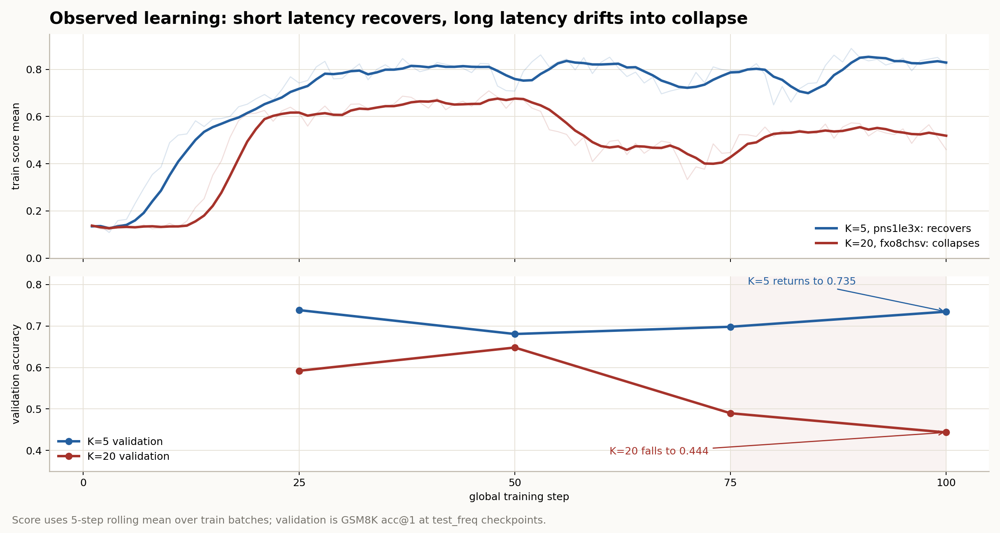

1. K increases staleness
The anchor computes M at old weights, then the live model applies it later. Larger K means more drift.
K=20 collapses because the anchor gradient is older and more off-policy. Q is not the main failure: after its first update, Q error stays low.
K hurts by aging the learning signal. At K=20, the anchor gradient comes from older weights and older policy samples. The merger then reuses that stale direction long enough for wrong-sign bias to accumulate.
Q is only an activation compression basis. It can stay good while the policy gets worse.
Fresher anchor gradient; validation ends near 0.735.
Staler anchor gradient; validation falls to 0.444.
High at bootstrap, then ≈0.04 after first update.
The anchor computes M at old weights, then the live model applies it later. Larger K means more drift.
GRPO samples come from the policy. A stale anchor learns from pi(theta_{t-K}), not today's policy.
PowerSGD Q tracks activation geometry. It does not know answer quality, reward, KL, or length.
M can point in an old direction.
pns1le3x) recovers and ends near val 0.735. K=20 (fxo8chsv) drifts down and ends near val 0.444.
Bottom line: K=20 makes anchor learning stale and off-policy. Q still compresses, but Q cannot tell whether the policy is learning the right thing.